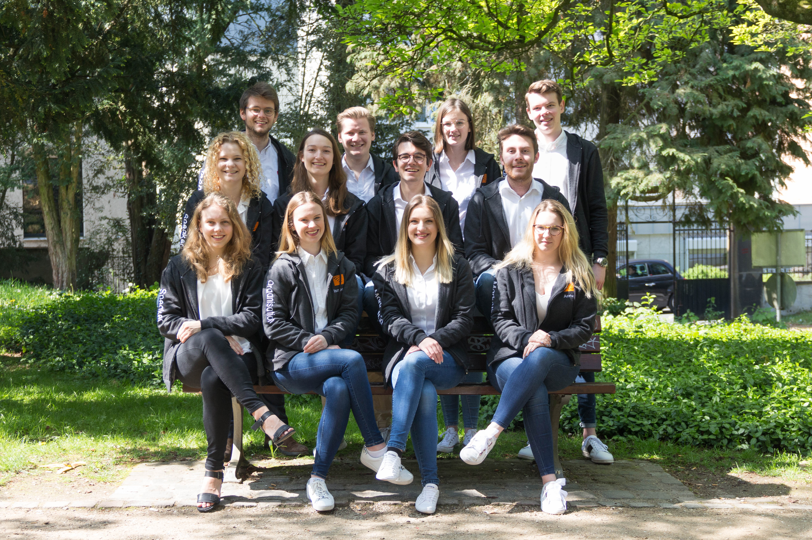
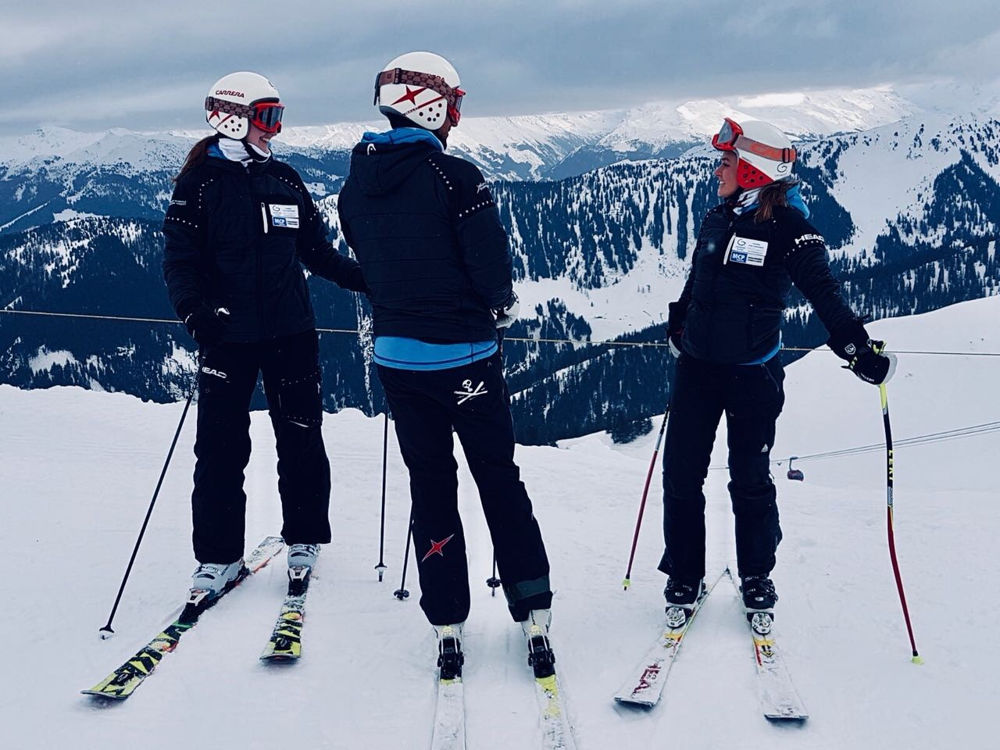

Hi, I am Katharina but everyone calls me Katschi. Welcome to my profile! I am a fourth semester student at WHU - Otto Beisheim School of Management where I am currently taking the class: Web Development. On this page you can learn a little more about me.
Since 2019, I am part of forumWHU. Besides our studies, we organize one of the largest student organized political congresses in Europe independently. My position as "Head of Communication" enabled me to use my communicative strengths to make difficult and objective decisions in various situations.
 forumWHU
Since 2018, I am a certified Ski instructor. During the winter I spend lots of time in the Austrian Alps teaching children and adults how to ski.
 TSJWIn my time off I like to be on the out and about. I like to do sports including running and swimming. But most of my time I spend with my friends cooking and enjoying a glass of wine or two. I also like to travel.